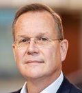

Ten geleide

Voor u ligt het jaarbericht 2022, dat aan de hand van verschillende beschouwingen en verslagen een terugblik op het opleidingsjaar 2022 geeft; een feestelijke jubileumjaar waarin de specialisme ouderengeneeskunde opleiding van het LUMC haar 25 jarige bestaan vierde. Niet alleen een feestelijk, maar ook een succesvol opleidingsjaar waarin de ingezette groei van de opleiding zich weer duidelijk voortzette en waarin wij uiteindelijk in principe gelukkig weer al het onderwijs dat wij face to face wilden verzorgen ook als zodanig konden uitvoeren.
Succesvol ook omdat wij op het gebied van al onze speerpunten (zie verder) mooie vorderingen hebben gemaakt. In het bijzonder op het gebied van het interprofessioneel opleiden, werden en worden er zowel in Leiden en Rotterdam flinke stappen gezet; bij onze dependance in Rotterdam niet alleen met de huisartsenopleiding daar, maar ook met de opleiding tot arts verstandelijk gehandicapten, die landelijk alleen in het EMC gevestigd is, zodat het interprofessioneel opleiden met hen een “unique selling point” voor SOOL is.
Ook in 2022 bleef SOOL samen met o.a. SOON, Verenso, SBOH, Actiz en VWS actief bijdragen aan het bekender maken van de ouderengeneeskunde. Een belangrijke actie hierbij betrof de ontwikkeling, vanuit SOON i.s.m. de SBOH, van een landelijk, verkort, aangepast opleidingsprogramma voor medisch specialisten die de overstap naar het specialisme ouderengeneeskunde willen maken. Niet onbelangrijk aspect van dit programma betreft de door Actiz ter beschikking gestelde middelen om het, bij een overstap naar de opleiding, onstane loongat van deze 2e-carriere-aios te dichten. In 2022 waren er 12 aanmeldingen voor dit aangepaste programma.
Het kennis- en ervaringsniveau van de nieuwe kandidaat-AIOS bleek ook in 2022 weer hoog. Wij zijn er in Leiden trots op dat wij AIOS een individueel opleidingsschema op maat bieden, dat royaal ruimte biedt aan persoonlijke wensen en voorkeuren; ook daar zijn wij dit jaar weer in geslaagd. Wij zijn er in leiden ook trots op dat, dankzij een kritische selectie en een gezamenlijk streven de lat hoger te leggen en te excelleren, de specialisten ouderengeneeskunde die de opleiding dit jaar hebben verlaten, geheel conform de missie van onze opleiding, weer echte visitekaartjes van onze opleiding en ons mooie veelzijdige vak zijn: specialisten ouderengeneeskunde 2.0.
AIOS omschrijven de ouderengeneeskunde als het vak van de toekomst: volop in ontwikkeling; een veelzijdig specialisme; generalistisch maar ook specialistisch; een vak met uitdagende complexe problematiek, door multimorbiditeit en polyfarmacie de richtlijnen voorbij; een vak voor mensen die oprechte interesse hebben in de (oudere maar heel vaak ook jongere) medemens en die van moeilijke puzzels houden, oog hebben voor wat er toe doet in het leven en die vooral ook gericht zijn op samenwerking, want voor de ouderengeneeskunde moet je echt een teamspeler zijn, een teamspeler die zijn werkterrein steeds meer ook buiten het verpleeghuis zal vinden, in het ziekenhuis en vooral ook in de eerste lijn.
De Specialisme Ouderengeneeskunde Opleiding Leiden maakt samen met de vervolgopleiding Huisartsgeneeskunde deel uit van de afdeling Public Health en Eerstelijns Geneeskunde (PHEG) van het Leids Universitair Medisch Centrum (LUMC) die naast genoemde vervolgopleidingen ook de disciplines Sociale Geneeskunde, Medische Antropologie en E-health omvat.
Leiden is in Nederland de ‘Silicon Valley’ van de ouderengeneeskunde: SOOL heeft het voorrecht zich in Leiden ingebed te weten in ’s lands grootste academische netwerkomgeving voor ouderengeneeskunde en diversiteit. SOOL kan daardoor gebruikmaken van diverse expertisecentra met elk belangrijke aandachtsgebieden binnen de ouderengeneeskunde, namelijk:
- LUMC-interne geneeskunde-ouderengeneeskunde
- binnen PHEG de onderdelen (Public) Population Health en medische antropologie
- AGE (Academische werkplaats voor Geriatrie in de Eerste lijn en de langdurige zorg)
- Universitair Netwerk voor de Care sector Zuid-Holland (UNC-ZH)
- Leyden Academy on Vitality and Ageing
- de enige huisartsopleiding in Nederland met ouderengeneeskunde als specifiek aandachtsgebied; een hoogleraar ouderengeneeskunde en de differentiatie ouderengeneeskunde voor AIOS huisartsgeneeskunde
- Master Vitality and Ageing
- Kaderopleiding Eerstelijns Ouderengeneeskunde
Binnen deze netwerkomgeving is in 2022 het LCO, LUMC Centrum voor Ouderengeneeskunde opgericht, voor samenwerken en verbinden in onderzoek en onderwijs in de ouderenzorg. SOOL is aangesloten bij dit LCO om ook van hieruit gezamenlijk en interprofessioneel leren en opleiden te stimuleren en faciliteren.
Mede dankzij deze academische omgeving en de hooggewaardeerde samenwerking daarbinnen, kon ons opleidingsinstituut, zoals geïllustreerd door alle navolgende bijdragen in dit jaarbericht, ook weer in 2022 een belangrijke slag maken in de kwaliteitsverbetering van de opleiding specialisme ouderengeneeskunde; daarbij recht doende aan het voortdurend streven te verbeteren en te vernieuwen en aan de geformuleerde missie, visie en speerpunten:
Missie
SOOL leidt AIOS op tot kundige, vooruitstrevende en betrokken specialisten ouderengeneeskunde, die leiderschap tonen en met oprechte interesse in de individuele kwetsbare (oudere) patiënt, het verschil maken.
Visie
SOOL wil, door zichzelf steeds te verbeteren, een toonaangevende en aantrekkelijke opleiding specialisme ouderengeneeskunde zijn, waar kwalitatief goed, wetenschappelijk onderbouwd en zo mogelijk interprofessioneel onderwijs gegeven wordt, in samenwerking met opleiders en diverse andere disciplines uit zowel de eerste als tweede lijn.
Door verbinding een bijdrage leveren aan de continue verbetering van de ouderenzorg in Nederland, staat bij SOOL voorop. SOOL maakt actief deel uit van het, landelijk meest uitgebreide, Leidse netwerk van scholings- en onderzoeksinstituten op het gebied van de ouderengeneeskunde en ouderenzorg. AIOS kunnen tijdens de opleiding laagdrempelig gebruikmaken van het volledige scholingsaanbod van de Leidse netwerkpartners.
SOOL vraagt veel van AIOS: een ambitieuze inzet en een hoge mate van betrokkenheid en zelfreflectie. Omgekeerd mogen AIOS alles van SOOL vragen wat hun scholing en vorming tot specialist ouderengeneeskunde ten goede komt. SOOL is vooruitstrevend, flexibel, betrokken en voldoet proactief aan haar maatschappelijke taak om continu in te spelen op veranderingen in de samenleving t.a.v. de ouderenzorg. Over SOOL wordt gezegd: ‘Bij SOOL wordt ‘de lat hoog gelegd’ en ‘Bij SOOL doen ze meer’.
Kernwaarden
Vernieuwen, verbeteren en verbinden.
Speerpunten
- Ketenzorg en multidisciplinaire samenwerking in de eerste lijn
- Wetenschappelijke vorming met stimulering promotietrajecten
- Communicatie met AIOS en opleiders
- Onderwijsinnovatie
- Docentprofessionalisering
- Interprofessioneel opleiden